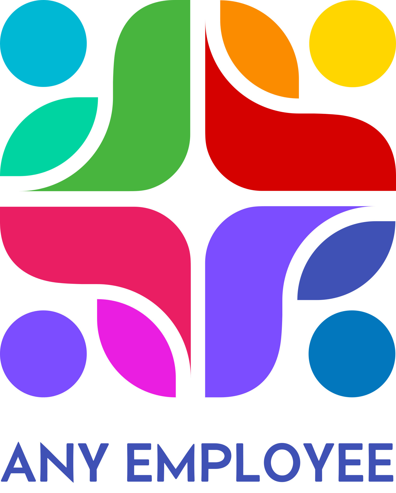

Somewhere in AnyEmp's world, a forest grows down to the bank of a wide, slow river — and one old stone bridge is the only place the two sides ever truly meet. Raccoons have lived along both banks for as long as anyone remembers, sorting stones, carrying symbols, and passing messages hand to hand until they land the same way on the other side. Hazel leads them — the crossing's own translator-in-chief.
Click Hazel's words to hear more from her →
This isn't just a tour of the workshop — it's a real, open vacancy. Every message that crosses this bridge gets sorted, checked, and carried faithfully from one language into another here, the same way each stone only earns its place on the shelf once it's been properly read. If that's work you'd be good at:
Every path in this kingdom eventually crosses this bridge — including the ones that lead to our real clients. Clients across Europe, Canada, and the US — primarily in English, Spanish, French, and German, though every stone from every bank gets sorted eventually.
Every shelf here is organized by what it's for, not just what it looks like — four real tools, each with its own place. English B1+ required to join.
Even at the crossing, the work has to end somewhere for the day — this is where it does.
Terms shown reflect one real open vacancy — not yet confirmed as universal across every Translator position.
This vacancy is real and open right now.
Ask Hazel — real answers about the role, before you apply.